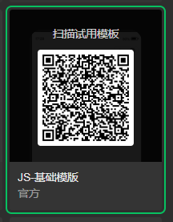
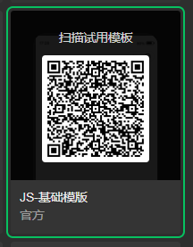
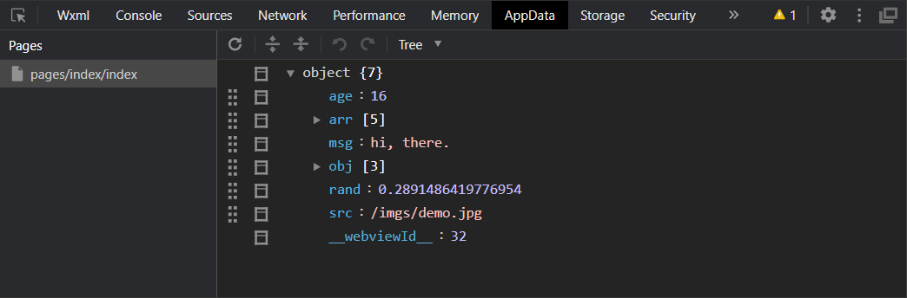
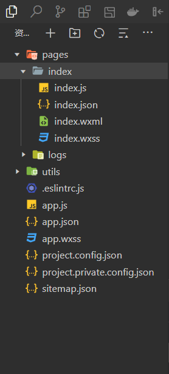

- 项目创建
- 双击启动微信开发者工具 → 扫码登录 → 单击加号 + 创建项目 → 设置以下各项并确定
- .项目名称
- .目录 - 指定位置并创建一个同名空文件夹作为项目目录
- .AppID
- .开发模式：小程序
- .后端服务：不使用云服务
- .模板选择：js - 基础模板
-
 项目创建

js - 基础模板
项目创建

js - 基础模板
- 项目打开
- 以导入的方式打开项目或在历史项目列表中选择项目
- 界面介绍
- 1.菜单栏
- 2.工具栏
- .模拟器 - 小程序效果预览
- .编辑器 - 开发区域
- .调试器 - Wxml、Console、Network、AppData、Storage；应多关注
-

调试器标签页
- .云开发
- .编译模式 - 首页预览或定制页面预览；或者在app.json中指定入口页面entryPagePath
- .预览 - 一定要预览！！！
- .真机调试 - 预览的同时，调试项目；同WiFi环境下，真机扫码预览，同时会打开调试窗口
- .清缓存
- .上传 - 版本发布到微信公众平台供审核并等待发布
- .版本管理 - Git/GitHub
- .详情 - 小程序的各种信息
- 项目结构
- app - 小程序全局样式、逻辑和配置；更多信息，请访问 App
- .app.wxss - 全局样式
- .app.js - 全局逻辑
- .app.json - 项目配置，标题、标签栏
- pages - 小程序各页面；每个页面由以下子页面组成；更多信息，请访问 Page
- .wxml - 页面结构；必须
- .js - 页面逻辑；必须
- .wxss - 页面样式
- .json - 当前页面的配置
-

项目结构
- 项目提交
-
上传
审核：比较烦
发布
- 项目版本
-
开发版本
审核版本
发布版本
- 项目推广
- 设置 → 基本设置 → 基本信息 → 下载小程序码
- 项目运维
- 统计